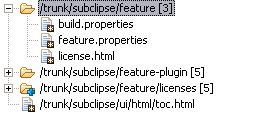

= option enabled
 = option selected
= option selected
Toggle this option to have the commit commentary wrap within the confines of the commit panel.
Toggles the display of commit comments on and off.
Toggles the display of the affected paths grid on and off.
Toggles the option to stop the retrieval of resource history for an item on a copy or rename operation on and off.
When the checked, the resource history will stop at the point that the selected file or folder was copied from somewhere else within the repository. This can be useful when looking at branches (or tags) as it stops at the root of that branch, and gives a quick indication of changes made in that branch only.
Select this option to display the affected paths in a flat grid style. Where many files within a folder were changed as part of a revision, this view will show one entry for every changed file. It is the default view for the affected paths grid.

Select this option to display the affected paths in a compressed folder (tree view) style. Where many files within a folder were changed as part of a revision, this view will show one compressed (collapsed) entry for each folder containing more than one changed file. The entry can then be expanded to show the individual files changed within that folder location.

Related Tasks
None
Related Reference